Up to this point, we have focused on describing linguistic data: looking at distributions, calculating measures of centre and spread, and visualizing patterns across groups. Descriptive statistics tell us what our sample looks like.
The next step is to ask whether the patterns we observe are likely to reflect a meaningful relationship between variables, or whether they could plausibly arise through ordinary variation in the data.
This module introduces the basic structure of regression. We will begin with probability and hypothesis testing, move through correlation and the t-test, and then build a simple linear regression by hand before asking R to do the same calculation for us.
The goal is not to memorize formulas. The goal is to understand what a regression model is actually doing.
In this module, we will:
Statistical analysis is fundamentally about uncertainty.
When we observe a pattern in a sample, we want to know whether it is stronger than we would expect from chance alone.
A simple coin-flipping example helps illustrate this idea.
If a fair coin is flipped once, the probability of heads is:
1 / 2
# 0.5 (50%)If it is flipped twice, the probability of getting two heads in a row is:
(1 / 2) * (1 / 2)
# 0.25 (25%)For three heads in a row:
(1 / 2)^3
# 0.125 (12.5%)For five heads in a row:
(1 / 2)^5
# 0.03125 (3.1%)As a particular sequence becomes more extreme or unusual under the chance model, its probability becomes smaller.
In statistical testing, we usually distinguish between two competing ideas.
The research hypothesis represents the relationship or difference we are interested in.
The null hypothesis represents a model in which that relationship or difference is absent.
For example, suppose we want to know whether speech rate differs between two political groupings.
A possible research hypothesis is:
Speech rate differs between the two political groupings.
The corresponding null hypothesis is:
Speech rate does not differ between the two political groupings.
Statistical testing does not prove that either statement is absolutely true. Instead, it asks how compatible our observed data are with the null model. For example, if Left- and Right-leaning MPs have different average speech rates in our sample, we want to know whether that difference is large enough that it would be unlikely to appear just by chance if the two groups did not really differ.
A p-value tells us how likely we would be to see a result like ours if there were actually no real effect. In other words, if the null hypothesis and the statistical model were true.
Another way to think about a p-value is in terms of repeated sampling. Imagine that we repeatedly collected new samples using the same procedure from a population in which the null hypothesis was actually true. The p-value tells us how often we would expect to obtain a result at least as extreme as the one we observed simply through sampling variation.
A small p-value therefore indicates that the observed pattern would be relatively unusual under the null model. For example, if Left- and Right-leaning MPs differ in speech rate and the p-value is very small, that suggests a difference of that size would be unusual if the two political groups did not actually differ in speech rate.
A conventional significance threshold is:
alpha <- 0.05Results below this threshold are often described as statistically significant. In other words, the smaller the p-value, the more evidence we have against the null hypothesis, and the more reason we have to reject it in favour of an alternative hypothesis, which may correspond to our original research hypothesis.
Importantly, a p-value is not:
It is a probability calculated under the null model (the model built to test the null-hypothesis).
A note on significance testing: The use of p-values, and especially the conventional \(\alpha=.05\) threshold, has been widely debated. The .05 cutoff is ultimately a convention rather than a natural boundary between meaningful and meaningless results, and many statisticians argue that effect sizes, uncertainty, replication, and the broader evidence should receive more emphasis. Despite these criticisms, p-values and the .05 significance threshold remain the standard approach in much of empirical research and are still widely expected in published work.
No statistical decision is completely certain.
A Type I error occurs when we reject a true null hypothesis. In practical terms, we conclude that an effect or relationship exists when it does not.
For example, We conclude that Left- and Right-leaning MPs differ in speech rate when, in reality, there is no underlying difference between the groups. In other words, we detect an effect that is not really there.
A Type II error occurs when we fail to reject a false null hypothesis. In practical terms, a real effect exists, but our analysis fails to detect it.
Type II error: We conclude that there is no difference in speech rate between Left- and Right-leaning MPs when, in reality, the groups do differ. In other words, a real effect exists, but our analysis fails to detect it.
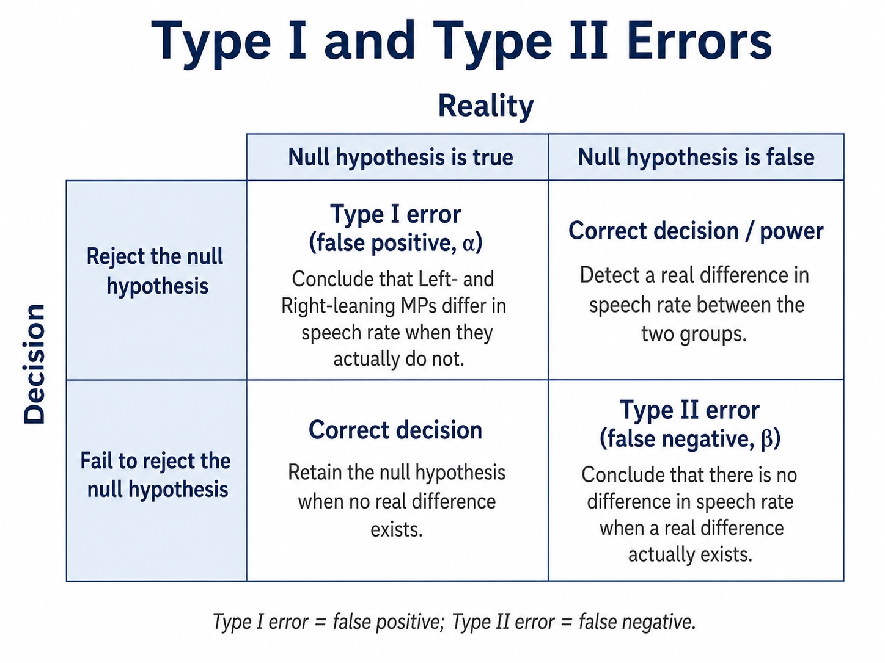
Sample size matters (I’ll repeat this again sample size matters) because larger datasets generally provide more information about the underlying pattern. Very small samples can produce unstable estimates and may fail to detect real effects.
library(ggplot2)
library(gridExtra)
# -----------------------------
# Small sample: 5 speakers
# -----------------------------
VOT_small <- data.frame(
VOT = c(52, 58, 61, 63, 120)
)
small_plot <- ggplot(VOT_small, aes(x = VOT)) +
geom_histogram(
aes(y = after_stat(density)),
binwidth = 10,
boundary = 0,
colour = "black",
fill = "grey70"
) +
geom_density(
linewidth = 1.2,
adjust = 1.2
) +
scale_x_continuous(
limits = c(0, 150),
breaks = seq(0, 150, 20)
) +
labs(
title = "Small sample (n = 5)",
x = "VOT (ms)",
y = "Density"
)
small_plot
set.seed(123)
# -----------------------------
# Large sample: 100 speakers
# -----------------------------
typical_VOT <- rnorm(
95,
mean = 58,
sd = 14
)
high_VOT <- c(110, 114, 118, 122, 126)
VOT_large <- data.frame(
VOT = c(typical_VOT, high_VOT)
)
large_plot <- ggplot(VOT_large, aes(x = VOT)) +
geom_histogram(
aes(y = after_stat(density)),
binwidth = 10,
boundary = 0,
colour = "black",
fill = "grey70"
) +
geom_density(
linewidth = 1.2,
adjust = 0.8
) +
scale_x_continuous(
limits = c(0, 150),
breaks = seq(0, 150, 20)
) +
labs(
title = "Large sample (n = 100)",
x = "VOT (ms)",
y = "Density"
)
large_plot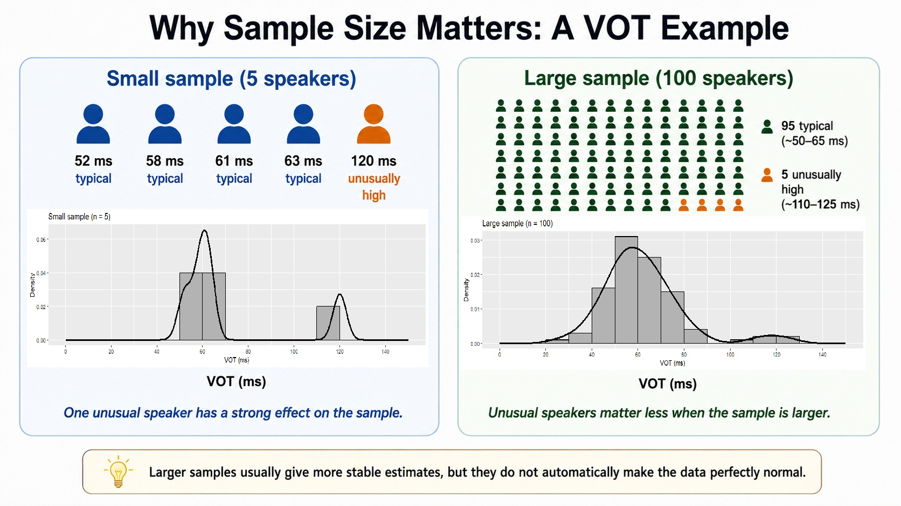
A correlation describes the relationship between two variables.
For example, we might ask whether longer words tend to have longer durations.
A positive relationship would mean that, as one variable increases, the other tends to increase as well.
A negative relationship would mean that, as one variable increases, the other tends to decrease.
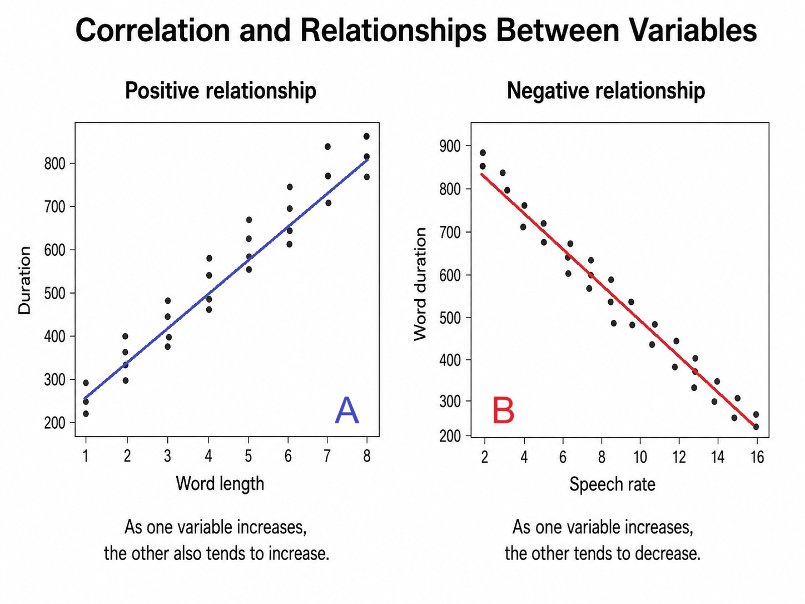
A relationship between two variables does not automatically mean that one causes the other.
Two variables may be related because:
| Possibility | Linguistic example |
|---|---|
| One affects the other | Speech rate > vowel duration. As speakers increase their speech rate, vowels tend to become shorter. Here there is a plausible causal mechanism: speaking faster leaves less time for individual segments. |
| The causal direction is reversed | L2 use < L2 proficiency. We might observe that people who use their L2 more often are more proficient and conclude that greater use causes proficiency. But part of the relationship may run the other way: people who are already more proficient may be more willing and able to use the L2 frequently. |
| Both are influenced by a third variable | Vocabulary size <-> lexical-decision reaction time, with age as a third variable. Older participants may have larger vocabularies but slower reaction times. Vocabulary size and reaction time could therefore appear related even if vocabulary size itself is not causing slower responses. |
| The apparent relationship arises by chance | Speaker age <-> VOT in a very small sample. Suppose we measure only eight speakers and the older speakers happen, by chance, to have longer VOTs. The sample could show a convincing correlation even though age and VOT are unrelated in the wider population. |
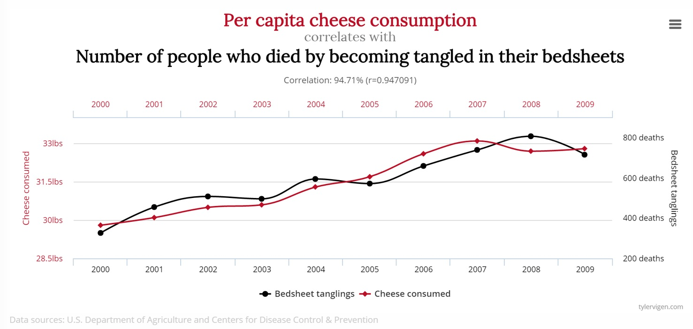
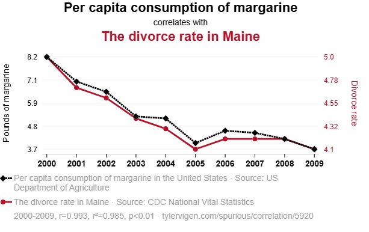
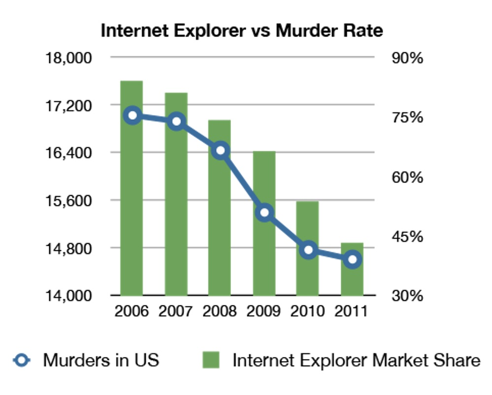
This is one reason regression is useful: we can examine the relationship between a dependent variable and one predictor while also accounting for other predictors that may matter.
A correlation tells us whether two variables move together.
A regression goes further by describing the expected value of one variable as a function of another.
Suppose we measure the duration of a small set of words and count how many syllables each word contains.
word_data <- data.frame(
Word = c("cat", "table", "banana", "computer", "linguistics",
"dog", "paper", "tomato"),
Syllables = c(1, 2, 3, 3, 3, 1, 2, 3),
Duration_ms = c(280, 390, 510, 495, 545, 260, 405, 520)
)
word_data
# Word Syllables Duration_ms
#1 cat 1 280
#2 table 2 390
#3 banana 3 510
#4 computer 3 495
#5 linguistics 3 545
#6 dog 1 260
#7 paper 2 405
#8 tomato 3 520Let’s visualize the relationship:
library(ggplot2)
ggplot(word_data, aes(x = Syllables, y = Duration_ms)) +
geom_point(size = 3) +
labs(
title = "Word duration by number of syllables",
x = "Number of syllables",
y = "Duration (ms)"
)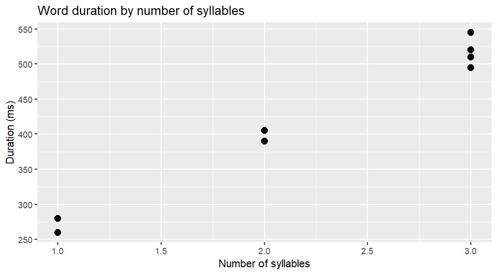
Before looking at the equation for a linear regression, we are going to build one from a very small dataset. This will let us see where each part of the model actually comes from.
Above, we have measured the duration of eight words. For each word, we have two pieces of information:
Our question is:
Can we use the number of syllables in a word to predict how long the word will last?
Our hypothesis is: the greater number of syllables in a word, the
longer the word’s duration will be.
Our null-hypothesis: The number of syllables in a word has no
relationship with the word’s duration.
In statistical terminology:
We can call these \(Y\) and \(X\):
These are not numbers invented by the statistical model. They are the two variables that we actually measured.
duration=c(280,390,510,495,545,260,405,520) #Y
syllables=c(1,2,3,3,3,1,2,3) #XWe just did this.
There is a fairly obvious pattern: words with more syllables tend to have longer durations.
But we want to describe that relationship more precisely.
One way to do this is to find a straight line that fits the observations as closely as possible.
Before we can draw that line, however, we need to know two things:
The first is called the slope. The second is called the intercept.
We will start by calculating the average value of each variable.
The mean number of syllables is:
mean(duration)
mean(syllables) \[ \bar{Y} = 425.625 \]
\[ \bar{X} = 2.25 \]
The bar over the letter (\(\bar{Y}\), \(\bar{X}\)) signifies the mean of the values.
So the average word in our dataset has 2.25 syllables.
And the average word duration in our dataset is 425.624
milliseconds.
We therefore have a point representing the centre of our data:
\[ (\bar{X},\bar{Y})=(2.25,425.625) \]
The regression line will pass through this point.
library(ggplot2)
ggplot(word_data, aes(x = Syllables, y = Duration_ms)) +
geom_point(size = 3) +
geom_point(
aes(
x = mean(Syllables),
y = mean(Duration_ms)
),
size = 6,
shape = 4,
stroke = 2
) +
labs(
title = "Word duration by number of syllables",
x = "Number of syllables",
y = "Duration (ms)"
)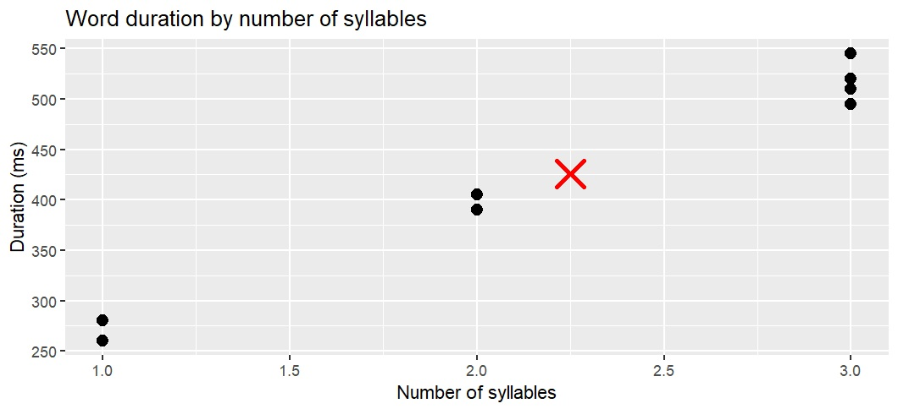
Notice the general pattern.
Words with fewer than average syllables also tend to have shorter than average durations.
Words with more than average syllables also tend to have longer than average durations.
That is the relationship we want the slope to describe.
The first thing we need to determine is how much
duration changes as the number of syllables
changes.
This is the slope.
We use the symbol \(b_1\) for the slope.
The formula is:
\[ b_1 = \frac{ \sum(X_i-\bar{X})(Y_i-\bar{Y}) }{ \sum(X_i-\bar{X})^2 } \]
This looks complicated, but each part is doing something fairly simple.
\[Xi−\bar{X}\]
Our average number of syllables is 2.25.
For cat, which has 1 syllable:
\[ 1-2.25=-1.25 \]
For table, which has 2 syllables:
\[ 2-2.25=-0.25 \]
For banana, which has 3 syllables:
\[ 3-2.25=0.75 \]
For computer, which has 3 syllables:
\[ 3-2.25=0.75 \]
For linguistics, which has 3 syllables:
\[ 3-2.25=0.75 \]
For dog, which has 1 syllables:
\[ 1-2.25=-1.25 \]
For paper, which has 2 syllables:
\[ 2-2.25=-0.25 \]
For tomato, which has 3 syllables:
\[ 3-2.25=0.75 \]
A negative number simply means below the average. A positive number means above the average.
word_data$xi_xavg=word_data$Syllables-mean(word_data$Syllables)
Word Syllables Duration_ms xi_xavg
1 cat 1 280 -1.25
2 table 2 390 -0.25
3 banana 3 510 0.75
4 computer 3 495 0.75
5 linguistics 3 545 0.75
6 dog 1 260 -1.25
7 paper 2 405 -0.25
8 tomato 3 520 0.75
\[Yi−\bar{Y}\]
Our average duration is 425.625 ms.
For cat, which lasted 280 ms:
\[ 280-425.625=-145.625 \]
For table, which lasted 390 ms:
\[ 390-425.625=-35.625 \]
For banana, which lasted 510 ms:
\[ 510-425.625=84.375 \]
For computer, which lasted 495 ms:
\[ 495-425.625=69.375 \]
For linguistics, which lasted 545 ms:
\[ 545-425.625=119.375 \]
For dog, which lasted 260 ms:
\[ 260-425.625=-165.625 \]
For paper, which lasted 405 ms:
\[ 405-425.625=-20.625 \]
For tomato, which lasted 520 ms:
\[ 520-425.625=94.375 \]
word_data$yi_yavg=word_data$Duration_ms-mean(word_data$Duration_ms)
Word Syllables Duration_ms xi_xavg yi_yavg
1 cat 1 280 -1.25 -145.625
2 table 2 390 -0.25 -35.625
3 banana 3 510 0.75 84.375
4 computer 3 495 0.75 69.375
5 linguistics 3 545 0.75 119.375
6 dog 1 260 -1.25 -165.625
7 paper 2 405 -0.25 -20.625
8 tomato 3 520 0.75 94.375Again:
We can calculate these values for all eight words:
The equation now reads: \[ b_1 = \frac{ \sum(−1.25)(−145.625)+(−0.25)(−35.625)+(0.75)(84.375)+(0.75)(69.375) +(0.75)(119.375)+(−1.25)(−165.625)+(−0.25)(−20.625)+(0.75)(94.375) }{ \sum(−1.25)2+(−0.25)2+(0.75)2+(0.75)2+(0.75)2+(−1.25)2+(−0.25)2+(0.75)2 } \]
After multiplication on the rop row and squaring the bottom row: \[ b_1 = \frac{ \sum(182.03125+8.90625+63.28125+52.03125+89.53125+207.03125+5.15625+70.78125) }{ \sum(1.5625+0.0625+0.5625+0.5625+0.5625+1.5625+0.0625+0.5625) } \]
word_data$xi_xavgXyi_yavg=word_data$xi_xavg*word_data$yi_yavg
word_data$xi_xsqrt=word_data$xi_xavg^2
Word Syllables Duration_ms xi_xavg yi_yavg xi_xavgXyi_yavg xi_xsqrt
1 cat 1 280 -1.25 -145.625 182.03125 1.5625
2 table 2 390 -0.25 -35.625 8.90625 0.0625
3 banana 3 510 0.75 84.375 63.28125 0.5625
4 computer 3 495 0.75 69.375 52.03125 0.5625
5 linguistics 3 545 0.75 119.375 89.53125 0.5625
6 dog 1 260 -1.25 -165.625 207.03125 1.5625
7 paper 2 405 -0.25 -20.625 5.15625 0.0625
8 tomato 3 520 0.75 94.375 70.78125 0.5625\[ \sum = add \]
So we add the values on the top and bottom:
\[ b_1 = \frac{ 678.75 }{ 5.5 } \]
And the we divide:
\[ b_1 = 123.4090909 \]
This is the important part.
Our predictor is number of syllables, and our outcome is duration in milliseconds.
Therefore:
For every additional syllable, the predicted duration increases by approximately 123.41 ms.
So \(b_1\) tells us about the relationship between X and Y.
In our data:
\[ b_1=123.41 \]
means:
+1 syllable \(\rightarrow\) approximately +123 ms
This is the slope of our regression line. We now know the steepness of the line, but we don’t yet know where to place the line vertically. Right now we can only say that every increase of 1 syllable corresponds to an increase of 123.41 ms.
We now know how steep our line should be.
But we still need to know where the line should be positioned.
This is the intercept, represented by \(b_0\).
We already know three things:
The regression line has to pass through the mean of X and the mean of Y:
\[ (2.25,425.625) \]
So we can work backwards to determine what the predicted duration would be when X is 0.
The formula is:
\[ b_0=\bar{Y}-b_1\bar{X} \]
Substituting our values:
\[ b_0=425.625-(123.41\times2.25) \]
\[ b_0=425.625-277.67 \]
\[ b_0=147.95 \]
So our intercept is approximately:
\[ b_0=148 \]
The intercept is the predicted value of Y when X is 0.
Here:
So the intercept tells us:
The model predicts a duration of approximately 148 ms when the number of syllables is 0.
A zero-syllable word is not especially meaningful linguistically. That is okay.
The important point is that 148 is not an observation in our dataset. We did not measure a zero-syllable word lasting 148 ms.
It is a value calculated from the relationship among all eight observations. It tells us where our regression line crosses the Y-axis.
library(ggplot2)
b0 <- 147.95
b1 <- 123.41
ggplot(word_data, aes(x = Syllables, y = Duration_ms)) +
geom_point(size = 3) +
# Regression line
geom_abline(intercept = b0, slope = b1) +
# X at the mean point
geom_point(
x = 2.25,
y = 425.625,
size = 6,
shape = 4,
color = "red",
stroke = 2
) +
annotate(
"text",
x = 2.25,
y = 425.625,
label = "Mean (2.25, 425.625)",
hjust = -0.1,
vjust = -1
) +
# X at the intercept
geom_point(
x = 0,
y = b0,
size = 6,
shape = 4,
color = "blue",
stroke = 2
) +
annotate(
"text",
x = 0,
y = b0,
label = "Intercept (0, 147.95)",
hjust = -0.1,
vjust = -1
) +
# Step showing the slope from x = 0 to x = 1
geom_segment(
x = 0, xend = 1,
y = b0, yend = b0,
linewidth = 1
) +
geom_segment(
x = 1, xend = 1,
y = b0, yend = b0 + b1,
linewidth = 1
) +
annotate(
"text",
x = 0.5,
y = b0 - 20,
label = "+1 syllable"
) +
annotate(
"text",
x = 1.05,
y = b0 + b1/2,
label = "+123.41 ms",
hjust = 0
) +
# Predicted 4-syllable point
geom_point(
x = 4,
y = b0 + 4 * b1,
size = 4,
shape = 1,
stroke = 1.5
) +
annotate(
"text",
x = 4,
y = b0 + 4 * b1,
label = "Predicted: 641.59 ms",
hjust = 1.05,
vjust = -1
) +
scale_x_continuous(
breaks = 0:4,
limits = c(-0.2, 4.2)
) +
labs(
title = "The slope and intercept of the regression line",
subtitle = "Intercept = 147.95; each additional syllable adds 123.41 ms",
x = "Number of syllables",
y = "Duration (ms)"
)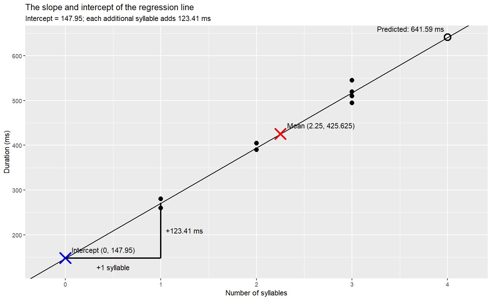
We have now calculated the two numbers that define our line:
\[ b_0=147.95 \]
and:
\[ b_1=123.41 \]
Only now do we need the general equation for a simple linear regression:
\[ \hat{Y}=b_0+b_1X \]
where:
For our particular dataset, therefore:
\[ \widehat{\text{Duration}}=147.95+123.41(\text{Syllables}) \]
Therefore, a word with one syllable is predicted to have a duration value of: 271 ms
\[ \widehat{271.36}=147.95+123.41(1) \] But cat actually lasted 280 ms. This gives us two different values:
\[ Y=280 \]
\[ \hat{Y}=271.36 \]
\(Y\) is what we
observed.
\(\hat{Y}\) is what our model
predicted.
They do not have to be identical. In fact, they normally will not
be.
A word with two syllables is predicted to have a duration value of: 395 ms
\[ \widehat{394.778}=147.95+123.41(2) \]
A word with three syllables is predicted to have a duration value of: 518 ms
\[ \widehat{518.18}=147.95+123.41(3) \] A word with four syllables is predicted to have a duration value of: 642 ms. Note that we do not have any words with four syllables in our data. This is an example of the models power for predictablity.
\[ \widehat{641.59}=147.95+123.41(4) \]
The abstract symbols now correspond to actual things:
| Symbol | In our example | Value/source |
|---|---|---|
| \(X\) | Number of syllables | Measured in the dataset |
| \(Y\) | Actual word duration | Measured in the dataset |
| \(b_0\) | Intercept | 147.95 ms |
| \(b_1\) | Slope | 123.41 ms per syllable |
| \(\hat{Y}\) | Predicted duration | Calculated by the model |
A useful distinction is:
X and Y come from our observations. \(b_0\) and \(b_1\) are estimated from those observations. \(\hat{Y}\) is then calculated using the resulting model.
We can use the same equation to generate a predicted duration for every word in the dataset.
b0 <- 147.9545
b1 <- 123.4091
word_data$Predicted <- b0 + (b1 * word_data$Syllables)
Word Syllables Duration_ms xi_xavg yi_yavg xi_xavgXyi_yavg xi_xsqrt Predicted
1 cat 1 280 -1.25 -145.625 182.03125 1.5625 271.36
2 table 2 390 -0.25 -35.625 8.90625 0.0625 394.77
3 banana 3 510 0.75 84.375 63.28125 0.5625 518.18
4 computer 3 495 0.75 69.375 52.03125 0.5625 518.18
5 linguistics 3 545 0.75 119.375 89.53125 0.5625 518.18
6 dog 1 260 -1.25 -165.625 207.03125 1.5625 271.36
7 paper 2 405 -0.25 -20.625 5.15625 0.0625 394.77
8 tomato 3 520 0.75 94.375 70.78125 0.5625 518.18
#A simplified model output
word_data[, c("Word", "Syllables", "Duration_ms", "Predicted")]
Word Syllables Duration_ms Predicted
1 cat 1 280 271.36
2 table 2 390 394.77
3 banana 3 510 518.18
4 computer 3 495 518.18
5 linguistics 3 545 518.18
6 dog 1 260 271.36
7 paper 2 405 394.77
8 tomato 3 520 518.18Back to our graph:
The points show what we actually observed.
The line shows what our regression model predicts.
The vertical distance between an observed point and the value predicted by the line is called a residual. We will return to residuals shortly.
We calculated the slope and intercept manually so that we could see where they come from.
In practice, we would not normally calculate them ourselves. R does this for us:
model <- lm(Duration_ms ~ Syllables, data = word_data)
summary(model)
Call:
lm(formula = Duration_ms ~ Syllables, data = word_data)
Residuals:
Min 1Q Median 3Q Max
-23.182 -8.977 -1.477 9.034 26.818
Coefficients:
Estimate Std. Error t value Pr(>|t|)
(Intercept) 147.955 16.997 8.705 0.000127 ***
Syllables 123.409 7.088 17.411 2.3e-06 ***
---
Signif. codes: 0 ‘***’ 0.001 ‘**’ 0.01 ‘*’ 0.05 ‘.’ 0.1 ‘ ’ 1
Residual standard error: 16.62 on 6 degrees of freedom
Multiple R-squared: 0.9806, Adjusted R-squared: 0.9774
F-statistic: 303.1 on 1 and 6 DF, p-value: 2.302e-06The model estimates the same two coefficients we calculated above:
The Syllables coefficient is our slope.
So R has fitted the model:
\[ \widehat{\text{Duration}}=147.95+123.41(\text{Syllables}) \]
The math we worked through above is what R is doing for us when we
run lm().
The regression line will not predict every observation perfectly.
The difference between an observed value and its predicted value is called a residual.
\[ Residual = Observed - Predicted \]
In R:
word_data$Residual <- word_data$Duration_ms - word_data$Predicted
word_data
Word Syllables Duration_ms xi_xavg yi_yavg xi_xavgXyi_yavg xi_xsqrt Predicted Residual
1 cat 1 280 -1.25 -145.625 182.03125 1.5625 271.36 8.64
2 table 2 390 -0.25 -35.625 8.90625 0.0625 394.77 -4.77
3 banana 3 510 0.75 84.375 63.28125 0.5625 518.18 -8.18
4 computer 3 495 0.75 69.375 52.03125 0.5625 518.18 -23.18
5 linguistics 3 545 0.75 119.375 89.53125 0.5625 518.18 26.82
6 dog 1 260 -1.25 -165.625 207.03125 1.5625 271.36 -11.36
7 paper 2 405 -0.25 -20.625 5.15625 0.0625 394.77 10.23
8 tomato 3 520 0.75 94.375 70.78125 0.5625 518.18 1.82Some residuals are positive and some are negative.
The regression line is chosen to minimize the sum of the squared residuals.
sum(word_data$Residual^2)
#1657.955This is the basic idea behind least-squares
regression. This is the basic idea behind ordinary
least-squares (OLS) linear regression, which is the type of regression
we are working with right now i.e., fitting with lm().
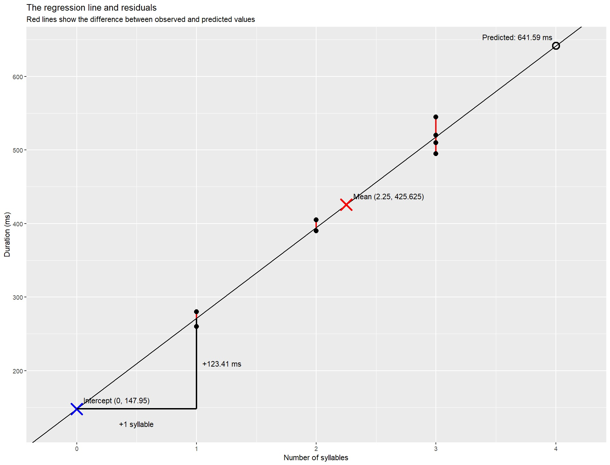
We use lm() for linear regressions:
model <- lm(Duration_ms ~ Syllables, data = word_data)The formula:
Duration_ms ~ Syllablesmeans:
Predict
Duration_msusingSyllables.
We can inspect the full model output with summary():
summary(model)
Call:
lm(formula = Duration_ms ~ Syllables, data = word_data)
Residuals:
Min 1Q Median 3Q Max
-23.182 -8.977 -1.477 9.034 26.818
Coefficients:
Estimate Std. Error t value Pr(>|t|)
(Intercept) 147.955 16.997 8.705 0.000127 ***
Syllables 123.409 7.088 17.411 2.3e-06 ***
---
Signif. codes: 0 ‘***’ 0.001 ‘**’ 0.01 ‘*’ 0.05 ‘.’ 0.1 ‘ ’ 1
Residual standard error: 16.62 on 6 degrees of freedom
Multiple R-squared: 0.9806, Adjusted R-squared: 0.9774
F-statistic: 303.1 on 1 and 6 DF, p-value: 2.302e-06The coefficient table contains four important columns:
EstimateStd. Errort valuePr(>|t|)The Estimate column contains the regression
coefficients.
The (Intercept) corresponds to \(b_0\).
The coefficient for Syllables corresponds to \(b_1\).
The estimate is one of the most important, if not the most important, value in your model (we will discuss this later).
The standard error describes the uncertainty associated with an estimated coefficient.
An estimate with a very large standard error is relatively uncertain.
An estimate with a small standard error is more precise.
To calculate it, we first need to know how far our actual observations are from the regression line. Those are the residuals:
\[ e_i=Y_i-\hat{Y}_i \] This is
easy; simply subtract the actual observations (Duration_ms
in this case) from the predicted regression line.
word_data$Residual <- word_data$Duration_ms - word_data$Predicted
word_data
Word Syllables Duration_ms xi_xavg yi_yavg xi_xavgXyi_yavg xi_xsqrt Predicted Residual
1 cat 1 280 -1.25 -145.625 182.03125 1.5625 271.36 8.64
2 table 2 390 -0.25 -35.625 8.90625 0.0625 394.77 -4.77
3 banana 3 510 0.75 84.375 63.28125 0.5625 518.18 -8.18
4 computer 3 495 0.75 69.375 52.03125 0.5625 518.18 -23.18
5 linguistics 3 545 0.75 119.375 89.53125 0.5625 518.18 26.82
6 dog 1 260 -1.25 -165.625 207.03125 1.5625 271.36 -11.36
7 paper 2 405 -0.25 -20.625 5.15625 0.0625 394.77 10.23
8 tomato 3 520 0.75 94.375 70.78125 0.5625 518.18 1.82We square those residuals and sum them:
\[ \sum e_i^2 = 1657.95 \] This is the sum of squared residuals that we just discussed.
word_data$ResidualSqrt <- word_data$Residual^2
word_data
Word Syllables Duration_ms xi_xavg yi_yavg xi_xavgXyi_yavg xi_xsqrt Predicted Residual ResidualSqrt
1 cat 1 280 -1.25 -145.625 182.03125 1.5625 271.36 8.64 74.6496
2 table 2 390 -0.25 -35.625 8.90625 0.0625 394.77 -4.77 22.7529
3 banana 3 510 0.75 84.375 63.28125 0.5625 518.18 -8.18 66.9124
4 computer 3 495 0.75 69.375 52.03125 0.5625 518.18 -23.18 537.3124
5 linguistics 3 545 0.75 119.375 89.53125 0.5625 518.18 26.82 719.3124
6 dog 1 260 -1.25 -165.625 207.03125 1.5625 271.36 -11.36 129.0496
7 paper 2 405 -0.25 -20.625 5.15625 0.0625 394.77 10.23 104.6529
8 tomato 3 520 0.75 94.375 70.78125 0.5625 518.18 1.82 3.3124
sum(word_data$ResidualSqrt)
[1] 1657.955Now calculate the residual standard error:
\[ s= \sqrt{ \frac{\sum e_i^2}{n-2} } \]
We have 8 observations, and 2 estimated coefficients
(intercept, duration) so:
\[ s= \sqrt{ \frac{1657.95}{8-2} }
\] \[ s= \sqrt{276.33} \] \[ s=16.62 \]
It’s worth noting that the result of \(n\)(observations) - \(n\)(coefficients) is the degrees of
freedom. Degrees of freedom are the number of values that are
still free to vary after we have used some information from the data to
estimate model parameters. Degrees of freedom are closely related to
sample size: with the same number of predictors, more observations
produce more degrees of freedom and generally more information for
estimating uncertainty.
\(df = \text{number of observations} − \text{number of coefficients estimated}\)
That is the number R reports from the model summary output at the bottom:
summary(model1)
Call:
lm(formula = Duration_ms ~ Syllables, data = word_data)
Residuals:
Min 1Q Median 3Q Max
-23.182 -8.977 -1.477 9.034 26.818
Coefficients:
Estimate Std. Error t value Pr(>|t|)
(Intercept) 147.955 16.997 8.705 0.000127 ***
Syllables 123.409 7.088 17.411 2.3e-06 ***
---
Signif. codes: 0 ‘***’ 0.001 ‘**’ 0.01 ‘*’ 0.05 ‘.’ 0.1 ‘ ’ 1
Residual standard error: 16.62 on 6 degrees of freedom
Multiple R-squared: 0.9806, Adjusted R-squared: 0.9774
F-statistic: 303.1 on 1 and 6 DF, p-value: 2.302e-06Note specifically:
Residual standard error: 16.62 on 6 degrees of freedom
The standard error of the intercept is calculated based on the residual standard error (\(s\)):
\[ SE(b_0) = s \sqrt{ \frac{1}{n} + \frac{\bar X^2}{\sum(X_i-\bar X)^2} } \]
Square the average of Syllable (\(\bar{X}\)) …
then…
square and the sum the result of the observations \({X_i}\) minus the average number of
Syllables (\(\bar{X}\))
…
then…
divide the two values…
then…
1 divided by the number of observations in the dataset…
then…
add this value to the previous…
then…
take the square root of this value…
then…
multiply it by the residual standard error.
This is your standard error for the intercept.
\[ SE(b_0) = 16.62 \sqrt{ \frac{1}{8} + \frac{2.25^2}{5.5} } \] \[ \boxed{SE(b_0)=16.997} \]
SE_b0 <- 16.62 * sqrt(
(1 / nrow(word_data)) +
(
mean(word_data$Syllables)^2 /
sum((word_data$Syllables - mean(word_data$Syllables))^2)
)
)
SE_b0
[1] 16.99353And the standard error for Syllables:
\[ SE(b_1) = \frac{s} {\sqrt{\sum(X_i-\bar X)^2}} \]
16.62/sqrt(sum((word_data$Syllables - mean(word_data$Syllables))^2))
7.086792I repeat the model below:
summary(model1)
Call:
lm(formula = Duration_ms ~ Syllables, data = word_data)
Residuals:
Min 1Q Median 3Q Max
-23.182 -8.977 -1.477 9.034 26.818
Coefficients:
Estimate Std. Error t value Pr(>|t|)
(Intercept) 147.955 16.997 8.705 0.000127 ***
Syllables 123.409 7.088 17.411 2.3e-06 ***
---
Signif. codes: 0 ‘***’ 0.001 ‘**’ 0.01 ‘*’ 0.05 ‘.’ 0.1 ‘ ’ 1
Residual standard error: 16.62 on 6 degrees of freedom
Multiple R-squared: 0.9806, Adjusted R-squared: 0.9774
F-statistic: 303.1 on 1 and 6 DF, p-value: 2.302e-06Note: There are very small rounding discrepancies as we did not do every calculation with the full range of decimals.
The t-value tells us how many standard errors the estimated coefficient is away from zero. The farther the t-value is from zero, the stronger the evidence that the coefficient is different from zero.
As a rough rule of thumb, a t-value of approximately ±1.96 or greater is often associated with statistical significance at the \(p < .05\) level in a two-tailed test. However, the exact critical value depends on the model’s degrees of freedom. With smaller samples, the required t-value is larger.
In our example, we have 6 degrees of freedom, so the critical value is approximately:
±2.447
I’m not going over the math, because, technically you should not be working with a dataset that has only 6 degrees of freedom. Ideally, to avoid deviating from the ±1.96 rule of thumb, you want a degrees of freedom value of approximately 500.
If you really want to verify the t-value critical limit, because you, for some reason, can not calculate a p-value, you can use:
qt(0.975, df =##)
qt(0.975, df =6)
[1] 2.447
qt(0.975, df = 480)
[1] 1.964918For a regression coefficient, the t-value is approximately:
\[ t = \frac{Estimate}{Standard\ Error} \]
We can verify this manually:
coef(summary(model))
Estimate Std. Error t value Pr(>|t|)
(Intercept) 147.9545 16.996647 8.704925 1.269865e-04
Syllables 123.4091 7.088092 17.410763 2.301692e-06
147.9545/16.996647
[1] 8.704925
123.4091/7.088092
[1] 17.410763The larger the absolute t-value, the farther the estimated coefficient is from zero relative to its uncertainty.
The p-value tells us how surprising our result would be if the null hypothesis were true.
In our regression, the null hypothesis is that the predictor has no real effect:
\[ H_0:b_1=0 \]
A small p-value means that a result this extreme would be unlikely if the true slope were actually zero. The smaller the p-value, the stronger the evidence against the null hypothesis.
For example:
\[ p=0.04 \]
means that, if the null hypothesis were true, we would obtain a result at least this extreme about 4% of the time.
Conventionally, results with:
\[ p<0.05 \]
are described as statistically significant.
Importantly, a p-value is not the probability that the null hypothesis is true. Rather, it is the probability of obtaining a result this extreme, assuming that the null hypothesis is true.
The p-value is calculated from the t-value and the model’s degrees of freedom.
Underneath this rather complex calculation is the Student’s t-distribution. For a two-tailed test, the p-value can be written as:
\[ p= 2\int_{|t|}^{\infty} \frac{ \Gamma\left(\frac{\nu+1}{2}\right) }{ \sqrt{\nu\pi}\Gamma\left(\frac{\nu}{2}\right) } \left( 1+\frac{x^2}{\nu} \right)^{-\frac{\nu+1}{2}} dx \]
where:
#Step 1: Enter the t-value and degrees of freedom
t_value <- 17.411
df <- 6
#Step 2: Calculate the Gamma functions
gamma((df + 1) / 2)
gamma(df / 2)
#Step 3: Calculate the constant at the front of the equation
constant <-
gamma((df + 1) / 2) /
(sqrt(df * pi) * gamma(df / 2))
constant
#Step 4: Define that t-distribution in R
t_distribution <- function(x) {
constant *
(1 + (x^2 / df))^(-(df + 1) / 2)
}
t_distribution(0)
#Step 5: Calculate the area beyond our t-value
right_tail <- integrate(
t_distribution,
lower = abs(t_value),
upper = Inf
)
right_tail
#Step 6: Double it for a two-tailed test
p_value <- 2 * right_tail$value
p_value
[1] 2.301476e-06
We are not going to work through this calculation by
hand. The important point is that the p-value is a probability
calculated from the t-distribution using our t-value and degrees of
freedom.
R performs this calculation for us.
Note: You do not need to know how to do this; this is here simply to show that the \(p-value\) is the result of a real probability calculation rather than a magic number produced by R.
Regression models become particularly powerful for linguistic analysis because we can include multiple predictors in the same model, and those predictors can be of different types. For example, a regression might contain:
age,
speech rate, or number of syllables;sex,
dialect, or word class;proficiency level or generation.This is important because linguistic variation is rarely determined by a single factor. The duration of a word, for example, might depend on the number of syllables it contains, characteristics of the speaker, the phonological environment, the dialect being spoken, and many other factors at the same time.
So far, our regression contained only one predictor:
\[ \hat{Y}=b_0+b_1X \]
For our word-duration example:
\[ \widehat{\text{Duration}} = b_0+b_1(\text{Syllables}) \]
We can extend exactly the same equation by adding another predictor:
\[ \hat{Y} = b_0+b_1X_1+b_2X_2 \]
For our data, let:
\[ X_1=\text{Syllables} \]
and:
\[ X_2=\text{Sex} \]
Because Sex is categorical, R needs to represent it
numerically inside the model. With F as the reference
category:
\[ F=0 \]
\[ M=1 \]
Our model is therefore:
\[ \widehat{\text{Duration}} = b_0+ b_1(\text{Syllables})+ b_2(\text{SexM}) \]
The important idea has not changed. We are still trying to find values for the coefficients that produce the best-fitting predictions. We now need to estimate three numbers:
\[ b_0 = \text{intercept} \]
\[ b_1 = \text{effect of Syllables} \]
\[ b_2 = \text{effect of being Male rather than Female} \]
Let’s add Sex to our model in the following way:
Note on Sex: For this teaching example, I use a
traditional binary Sex variable simply because binary
predictors make the regression mechanics easy to demonstrate. I am
deliberately not using Gender here, since gender is a much
broader and more diverse social category and would require more careful
coding and interpretation. I am also aware that biological sex itself is
not strictly binary; the binary coding used here is only a simplified
statistical example.
word_data=word_data[,-4:-15]
word_data$Sex=c("F", "F", "M", "M", "M", "F", "M", "M")
Word Syllables Duration_ms Sex
1 cat 1 280 F
2 table 2 390 F
3 banana 3 510 M
4 computer 3 495 M
5 linguistics 3 545 M
6 dog 1 260 F
7 paper 2 405 M
8 tomato 3 520 MWe could then recode Sex with numerical values. This is
not necessary for predictors in lm(), however, it is for
manual calculations, and it is good to know how to do this because the
dependent variable in glm() often requires conversion.
word_data$SexNum = ifelse(word_data$Sex == "M", 1, 0)
Word Syllables Duration_ms Sex SexNum
1 cat 1 280 F 0
2 table 2 390 F 0
3 banana 3 510 M 1
4 computer 3 495 M 1
5 linguistics 3 545 M 1
6 dog 1 260 F 0
7 paper 2 405 M 1
8 tomato 3 520 M 1With one predictor, calculating the slope was fairly simple. With two predictors, each coefficient has to account for the relationship between both predictors and the dependent variable, as well as the relationship between the predictors themselves.
The equations used to calculate a regression line with a second predictor follow. I was originally going to walk through the calculations with you, but I am going to save you the torture. If you want to see the calculations for yourself, click the reveal arrow at each step. They are calculated in both Excel and R.
\[ S_{11}=\sum(X_1-\bar X_1)^2 \]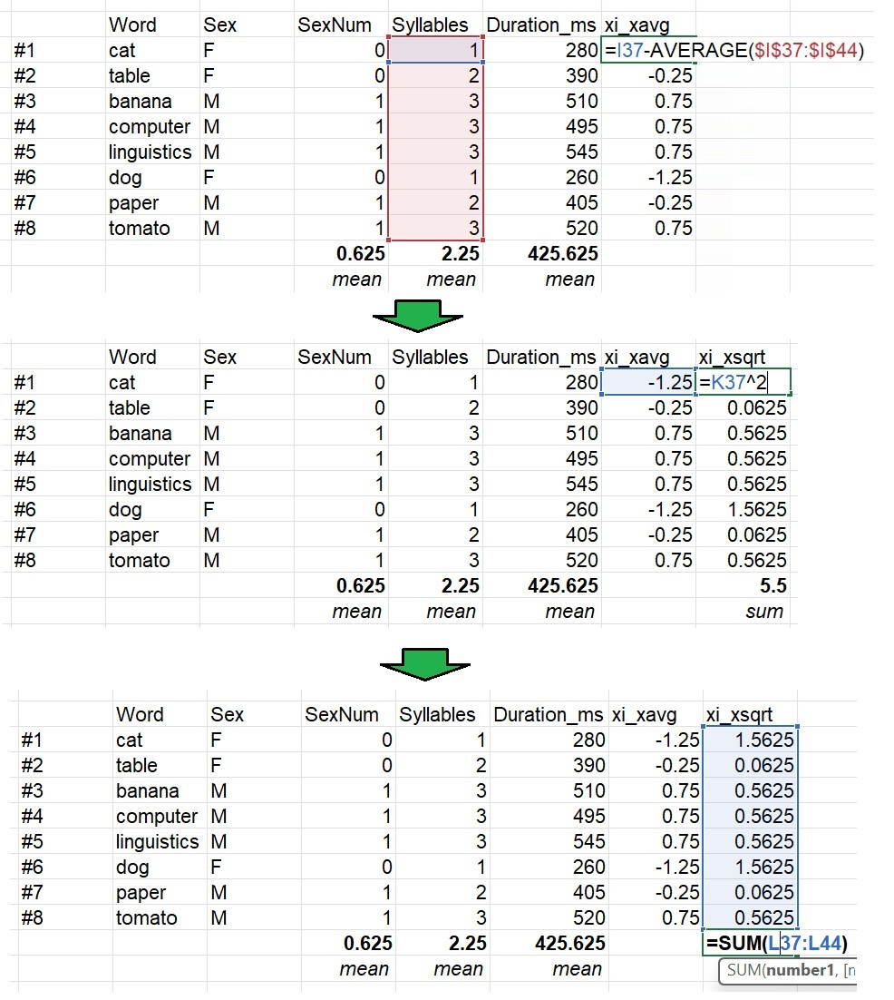
word_data$xi_xavg=word_data$Syllables-mean(word_data$Syllables)
word_data$xi_xsqrt=word_data$xi_xavg^2
word_data
Word Syllables Duration_ms Sex SexNum xi_xavg xi_xsqrt
1 cat 1 280 F 0 -1.25 1.5625
2 table 2 390 F 0 -0.25 0.0625
3 banana 3 510 M 1 0.75 0.5625
4 computer 3 495 M 1 0.75 0.5625
5 linguistics 3 545 M 1 0.75 0.5625
6 dog 1 260 F 0 -1.25 1.5625
7 paper 2 405 M 1 -0.25 0.0625
8 tomato 3 520 M 1 0.75 0.5625
sum(word_data$xi_xsqrt)
[1] 5.5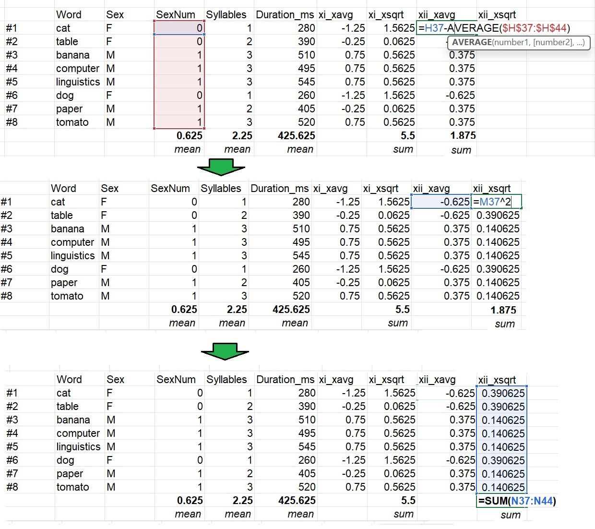
word_data$xii_xavg=word_data$SexNum-mean(word_data$SexNum)
word_data$xii_xsqrt=word_data$xii_xavg^2
word_data
Word Syllables Duration_ms Sex SexNum xi_xavg xi_xsqrt xii_xavg xii_xsqrt
1 cat 1 280 F 0 -1.25 1.5625 -0.625 0.390625
2 table 2 390 F 0 -0.25 0.0625 -0.625 0.390625
3 banana 3 510 M 1 0.75 0.5625 0.375 0.140625
4 computer 3 495 M 1 0.75 0.5625 0.375 0.140625
5 linguistics 3 545 M 1 0.75 0.5625 0.375 0.140625
6 dog 1 260 F 0 -1.25 1.5625 -0.625 0.390625
7 paper 2 405 M 1 -0.25 0.0625 0.375 0.140625
8 tomato 3 520 M 1 0.75 0.5625 0.375 0.140625
sum(word_data$xii_xsqrt)
[1] 1.875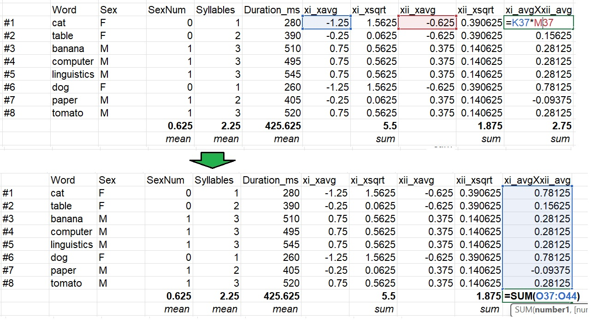
word_data$xi_avgXxii_avg=word_data$xi_xavg*word_data$xii_xavg
word_data
Word Syllables Duration_ms Sex SexNum xi_xavg xi_xsqrt xii_xavg xii_xsqrt xi_avgXxii_avg
1 cat 1 280 F 0 -1.25 1.5625 -0.625 0.390625 0.78125
2 table 2 390 F 0 -0.25 0.0625 -0.625 0.390625 0.15625
3 banana 3 510 M 1 0.75 0.5625 0.375 0.140625 0.28125
4 computer 3 495 M 1 0.75 0.5625 0.375 0.140625 0.28125
5 linguistics 3 545 M 1 0.75 0.5625 0.375 0.140625 0.28125
6 dog 1 260 F 0 -1.25 1.5625 -0.625 0.390625 0.78125
7 paper 2 405 M 1 -0.25 0.0625 0.375 0.140625 -0.09375
8 tomato 3 520 M 1 0.75 0.5625 0.375 0.140625 0.28125
sum(word_data$xi_avgXxii_avg)
[1] 2.75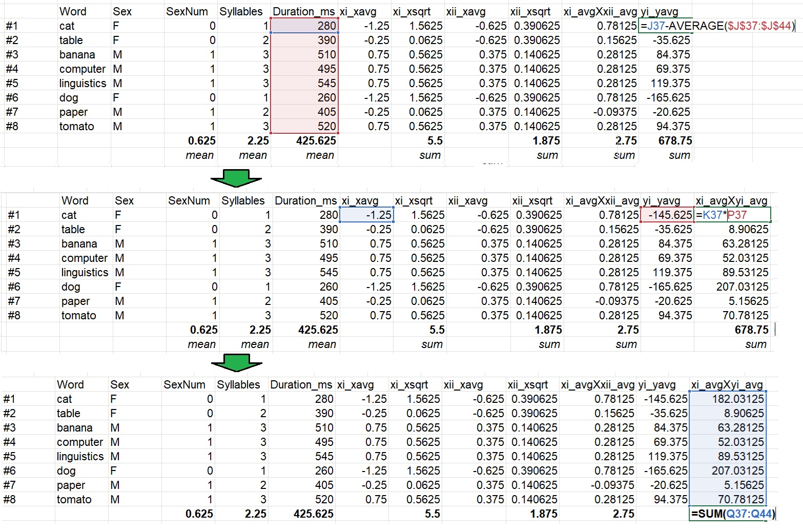
word_data$yi_yavg=word_data$Duration_ms-mean(word_data$Duration_ms)
word_data$xi_avgXyi_avg=word_data$xi_xavg*word_data$yi_yavg
word_data
Word Syllables Duration_ms Sex SexNum xi_xavg xi_xsqrt xii_xavg xii_xsqrt xi_avgXxii_avg yi_yavg xi_avgXyi_avg
1 cat 1 280 F 0 -1.25 1.5625 -0.625 0.390625 0.78125 -145.625 182.03125
2 table 2 390 F 0 -0.25 0.0625 -0.625 0.390625 0.15625 -35.625 8.90625
3 banana 3 510 M 1 0.75 0.5625 0.375 0.140625 0.28125 84.375 63.28125
4 computer 3 495 M 1 0.75 0.5625 0.375 0.140625 0.28125 69.375 52.03125
5 linguistics 3 545 M 1 0.75 0.5625 0.375 0.140625 0.28125 119.375 89.53125
6 dog 1 260 F 0 -1.25 1.5625 -0.625 0.390625 0.78125 -165.625 207.03125
7 paper 2 405 M 1 -0.25 0.0625 0.375 0.140625 -0.09375 -20.625 5.15625
8 tomato 3 520 M 1 0.75 0.5625 0.375 0.140625 0.28125 94.375 70.78125
sum(word_data$xi_avgXyi_avg)
[1] 678.75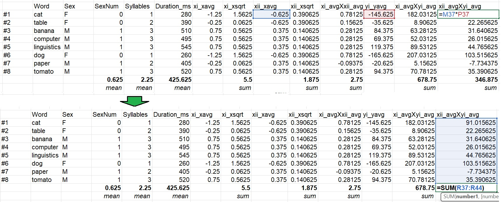
word_data$xii_avgXyi_avg=word_data$xii_xavg*word_data$yi_yavg
word_data
Word Syllables Duration_ms Sex SexNum xi_xavg xi_xsqrt xii_xavg xii_xsqrt xi_avgXxii_avg yi_yavg xi_avgXyi_avg xii_avgXyi_avg
1 cat 1 280 F 0 -1.25 1.5625 -0.625 0.390625 0.78125 -145.625 182.03125 91.015625
2 table 2 390 F 0 -0.25 0.0625 -0.625 0.390625 0.15625 -35.625 8.90625 22.265625
3 banana 3 510 M 1 0.75 0.5625 0.375 0.140625 0.28125 84.375 63.28125 31.640625
4 computer 3 495 M 1 0.75 0.5625 0.375 0.140625 0.28125 69.375 52.03125 26.015625
5 linguistics 3 545 M 1 0.75 0.5625 0.375 0.140625 0.28125 119.375 89.53125 44.765625
6 dog 1 260 F 0 -1.25 1.5625 -0.625 0.390625 0.78125 -165.625 207.03125 103.515625
7 paper 2 405 M 1 -0.25 0.0625 0.375 0.140625 -0.09375 -20.625 5.15625 -7.734375
8 tomato 3 520 M 1 0.75 0.5625 0.375 0.140625 0.28125 94.375 70.78125 35.390625
sum(word_data$xii_avgXyi_avg)
[1] 346.875For our dataset, these are:
\[ S_{11}=5.5 \] \[ S_{22}=1.875 \] \[ S_{12}=2.75 \] \[ S_{1Y}=678.75 \] \[ S_{2Y}=346.875 \]
The coefficient for Syllables is:
\[ b_1= \frac {S_{1Y}S_{22}-S_{2Y}S_{12}} {S_{11}S_{22}-S_{12}^2} \]
Now substitute our numbers:
\[ b_1= \frac {(678.75)(1.875)-(346.875)(2.75)} {(5.5)(1.875)-(2.75)^2} \]
Calculate the products:
\[ b_1= \frac {1272.65625-953.90625} {10.3125-7.5625} \]
Reduce:
\[ b_1= \frac{318.75}{2.75} \]
Therefore:
\[ \boxed{b_1=115.91} \]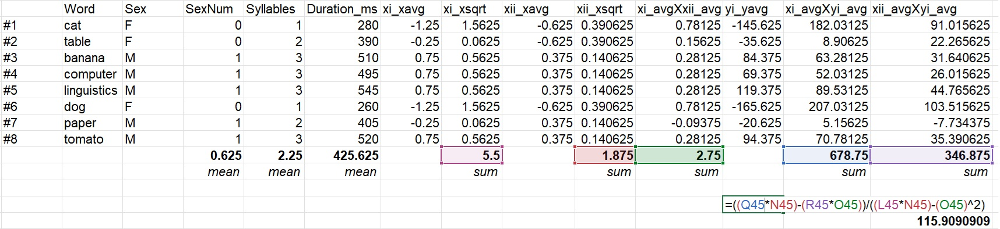
b1=((sum(word_data$xi_avgXyi_avg)*sum(word_data$xii_xsqrt))-(sum(word_data$xii_avgXyi_avg)*sum(word_data$xi_avgXxii_avg)))/((sum(word_data$xi_xsqrt)*sum(word_data$xii_xsqrt))-(sum(word_data$xi_avgXxii_avg)^2))
b1
[1] 115.9091
#Easier
x1 = word_data$Syllables - mean(word_data$Syllables)
x2 = word_data$SexNum - mean(word_data$SexNum)
y = word_data$Duration_ms - mean(word_data$Duration_ms)
S11 = sum(x1^2)
S22 = sum(x2^2)
S12 = sum(x1 * x2)
S1Y = sum(x1 * y)
S2Y = sum(x2 * y)
b1 = ((S1Y * S22) - (S2Y * S12)) /
((S11 * S22) - (S12^2))
b1
[1] 115.9091So, after accounting for Sex, each additional
syllable is associated with an estimated increase of
approximately 115.91 ms in word duration.
We do essentially the same calculation for our second predictor:
\[ b_2= \frac {S_{2Y}S_{11}-S_{1Y}S_{12}} {S_{11}S_{22}-S_{12}^2} \]
Substitute the values:
\[ b_2= \frac {(346.875)(5.5)-(678.75)(2.75)} {(5.5)(1.875)-(2.75)^2} \]
Calculate the products:
\[ b_2= \frac {1907.8125-1866.5625} {10.3125-7.5625} \]
Reduce:
\[ b_2= \frac{41.25}{2.75} \]
Therefore:
\[ \boxed{b_2=15} \]
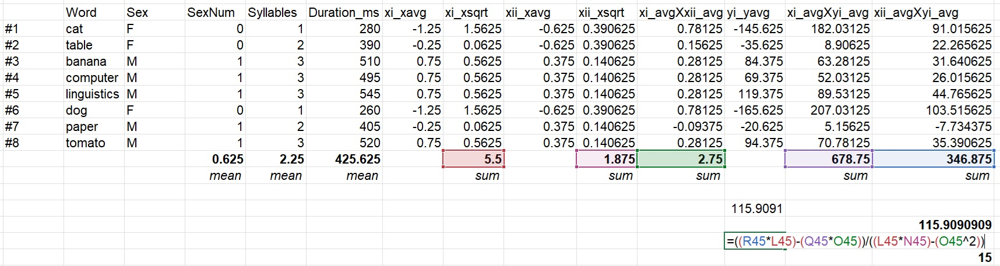
b2 = ((S2Y * S11) - (S1Y * S12)) /
((S11 * S22) - (S12^2))
b2
[1] 15This means that, after accounting for the number of
syllables, males are predicted to have word
durations approximately 15 ms longer than females. Probably
not linguistically relevant whether or not it is significant!
Once we know both coefficients, calculating the intercept is relatively straightforward:
\[ b_0= \bar Y-b_1\bar X_1-b_2\bar X_2 \]
Our means are:
\[ \bar Y=425.625 \] \[ \bar X_1=2.25 \] \[ \bar X_2=0.625 \]
So:
\[ b_0= 425.625-(115.9091)(2.25)-(15)(0.625) \]
Multiply:
\[ b_0= 425.625-260.7955-9.375 \]
Therefore:
\[ \boxed{b_0=155.45} \]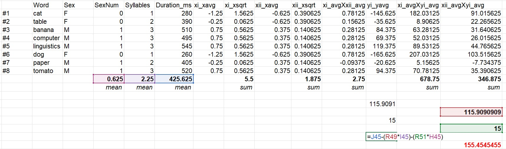
b0 = mean(word_data$Duration_ms) -
(b1 * mean(word_data$Syllables)) -
(b2 * mean(word_data$SexNum))
b0
[1] 155.4545And if we run our regression model now:
model5=lm(Duration_ms ~ Syllables + Sex,data = word_data)
summary(model5)
Coefficients:
Estimate Std. Error t value Pr(>|t|)
(Intercept) 155.45 21.86 7.113 0.000852 ***
Syllables 115.91 14.52 7.984 0.000497 ***
SexM 15.00 24.86 0.603 0.572629
---
Signif. codes: 0 ‘***’ 0.001 ‘**’ 0.01 ‘*’ 0.05 ‘.’ 0.1 ‘ ’ 1
Residual standard error: 17.58 on 5 degrees of freedom
Multiple R-squared: 0.9819, Adjusted R-squared: 0.9747
F-statistic: 135.7 on 2 and 5 DF, p-value: 4.403e-05Write up:
The multiple regression model showed that
Syllableswas a strong predictor of word duration, whileSexwas not. HoldingSexconstant, each additionalsyllablewas associated with an estimated 115.91 ms increase in duration (\(b = 115.91\), SE = 14.52, \(t = 7.98\), \(p < .001\)). HoldingSyllablesconstant,malespeakers were estimated to have durations 15 ms longer thanfemalespeakers, but this difference was not statistically significant (\(b = 15.00\), SE = 24.86, \(t = 0.60\), \(p = .573\)).
The model as a whole was statistically significant, \(F(2,5)=135.7\), \(p < .001\), and explained approximately 98.2% of the variation in word duration (\(R^2=.982\), adjusted \(R^2=.975\)). The intercept of 155.45 ms represents the predicted duration for a
femalespeaker whenSyllables= 0, although a zero-syllable word is not linguistically meaningful in this dataset.
You may have encountered statistical tests such as t-tests and ANOVAs. These tests can be useful, but in this course we will generally use regression models whenever the research question can be expressed as a regression.
One reason is that many familiar statistical tests are actually special cases of regression.
For example, suppose we want to know whether word duration differs
between males and females. We could conduct a
t-test with equal variance:
Note: equal variance means assuming that the amount of variability
within each group is approximately the same. For example, an
equal-variance t-test assumes that word durations vary by roughly the
same amount among males and females (lm() does this by
default).
#T-test
t.test(Duration_ms ~ Sex, data = word_data, var.equal = TRUE)
Two Sample t-test
data: Duration_ms by Sex
t = -4.2567, df = 6, p-value = 0.005341
alternative hypothesis: true difference in means between group F and group M is not equal to 0
95 percent confidence interval:
-291.34609 -78.65391
sample estimates:
mean in group F mean in group M
310 495 This tells us that there is a significant difference between
Females and Males: P-Value =
0.005341
An Anova test tells us essentially the same information.
#Anova test
aov_mod=aov(Duration_ms ~ Sex, data = word_data)
summary(aov_mod)
Df Sum Sq Mean Sq F value Pr(>F)
Sex 1 64172 64172 18.12 0.00534 **
Residuals 6 21250 3542
---
Signif. codes: 0 ‘***’ 0.001 ‘**’ 0.01 ‘*’ 0.05 ‘.’ 0.1 ‘ ’ 1And, a linear regression also provides the same information:
#Linear regression
model2=lm(Duration_ms~Sex, data=word_data)
summary(model2)
Call:
lm(formula = Duration_ms ~ Sex, data = word_data)
Residuals:
Min 1Q Median 3Q Max
-90.00 -35.00 7.50 31.25 80.00
Coefficients:
Estimate Std. Error t value Pr(>|t|)
(Intercept) 310.00 34.36 9.022 0.000104 ***
SexM 185.00 43.46 4.257 0.005341 **
---
Signif. codes: 0 ‘***’ 0.001 ‘**’ 0.01 ‘*’ 0.05 ‘.’ 0.1 ‘ ’ 1
Residual standard error: 59.51 on 6 degrees of freedom
Multiple R-squared: 0.7512, Adjusted R-squared: 0.7098
F-statistic: 18.12 on 1 and 6 DF, p-value: 0.005341The major advantage of the linear regression is that it gives us an
estimate of the size and direction of the effect. Here,
SexM = 185 tells us that male speakers have word durations
that are estimated to be 185 ms longer than female speakers, on average.
The estimated is presented USING THE METRIC OF INTEREST! This
is much more informative than simply knowing that the difference is
statistically significant.
This distinction is especially important in linguistic analysis. A result can be statistically significant while the actual effect is so small that it has little or no linguistic relevance. Regression allows us to ask both whether an effect is BOTH statistically reliable and whether its estimated size is meaningful for the linguistic phenomenon we are studying.
One of the major advantages of regression, as we saw in the previous section, is that we can include multiple predictors in the same model and estimate the contribution of each while accounting for the others.
This is especially important in linguistic analysis because
linguistic variables are rarely influenced by only one factor.
Word duration, for example, may depend simultaneously on
the number of syllables, characteristics of the speaker,
the speaker’s region, speech rate,
phonological environment, and other linguistic or social
factors.
A standard independent-samples t-test cannot accommodate this kind of structure because it compares two groups defined by a single predictor. Similarly, a standard chi-square test of independence examines the association between two categorical variables.
ANOVA can be extended further. A factorial ANOVA can
contain multiple categorical predictors, while an
ANCOVA (Analysis of Covariance) can combine
categorical and numeric predictors. In fact, these belong to the same
general linear-model framework as lm(). However, regression
output gives us the individual coefficient estimates
that are particularly useful for linguistic interpretation: the size and
direction of an effect while the other predictors are held constant.
model3 = lm(Duration_ms ~ Sex + Syllables, data = word_data)
summary(model3)This produces a separate coefficient estimate for each predictor:
Coefficients:
Estimate Std. Error t value Pr(>|t|)
(Intercept) 155.45 21.86 7.113 0.000852 ***
SexM 15.00 24.86 0.603 0.572629
Syllables 115.91 14.52 7.984 0.000497 ***
---
Signif. codes: 0 ‘***’ 0.001 ‘**’ 0.01 ‘*’ 0.05 ‘.’ 0.1 ‘ ’ 1
Residual standard error: 17.58 on 5 degrees of freedom
Multiple R-squared: 0.9819, Adjusted R-squared: 0.9747
F-statistic: 135.7 on 2 and 5 DF, p-value: 4.403e-05In the previous section, we saw that the simple model suggested that
males had word durations approximately 185 ms longer than
females. Once Syllables was added to the
model, however, the estimated effect of Sex fell to only 15
ms and was no longer statistically significant.
This illustrates one of the main reasons we use multiple regression: an apparent effect of one variable may actually reflect variation associated with another predictor. Regression allows us to estimate these effects simultaneously rather than examining each variable in isolation.
ANOVA can also be extended to include a mixture of categorical and numeric predictors. This is traditionally called ANCOVA (Analysis of Covariance).
For example, we could analyse Sex as a categorical
predictor and Syllables as a numeric predictor:
ancova_mod = aov(Duration_ms ~ Sex + Syllables, data = word_data)
summary(ancova_mod)
Df Sum Sq Mean Sq F value Pr(>F)
Sex 1 64172 64172 207.62 2.9e-05 ***
Syllables 1 19705 19705 63.75 0.000497 ***
Residuals 5 1545 309
---
Signif. codes: 0 ‘***’ 0.001 ‘**’ 0.01 ‘*’ 0.05 ‘.’ 0.1 ‘ ’ 1This is modelling essentially the same relationship as:
model3 = lm(Duration_ms ~ Sex + Syllables, data = word_data)
summary(model3)
Coefficients:
Estimate Std. Error t value Pr(>|t|)
(Intercept) 155.45 21.86 7.113 0.000852 ***
SexM 15.00 24.86 0.603 0.572629
Syllables 115.91 14.52 7.984 0.000497 ***
---
Signif. codes: 0 ‘***’ 0.001 ‘**’ 0.01 ‘*’ 0.05 ‘.’ 0.1 ‘ ’ 1
Residual standard error: 17.58 on 5 degrees of freedom
Multiple R-squared: 0.9819, Adjusted R-squared: 0.9747
F-statistic: 135.7 on 2 and 5 DF, p-value: 4.403e-05So ANCOVA can accommodate the kind of mixture of predictors that we commonly encounter in linguistic data. In fact, ANCOVA and multiple linear regression are not fundamentally different statistical models. Both belong to the general linear-model framework.
The problem for our purposes is that the standard ANCOVA output focuses on F-tests for each predictor:
There’s a second issue with aov(). Let’s add another
predictor to our data set: Province (abbriviated to
Prov) to test whether speakers from different provinces
might speak faster or slower.
word_data$Prov=c("BC", "ON", "SK", "ON", "SK", "BC", "AL", "AL")When a categorical predictor has more than two levels (such as
Prov), ANOVA and regression present the effect differently.
A standard ANOVA treats Prov as a single factor and gives
one overall test asking whether province explains
significant variation in word duration. It does not tell us directly
which provinces differ from one another or by how much (we care about
this as linguists).
aov_model4=aov(Duration_ms ~ Prov, data = word_data)
summary(aov_model4)
Df Sum Sq Mean Sq F value Pr(>F)
Prov 3 72484 24161 7.47 0.0408 *
Residuals 4 12938 3234 Hey, look! A significant difference!
However, linear regression fits the same underlying model but breaks
the categorical predictor into coefficient estimates relative to a
reference category. In our example, AL is the reference
level, so the coefficients for BC, ON, and
SK tell us how much each province differs from
AL, and in which direction.
model4=lm(Duration_ms ~ Prov, data = word_data)
summary(model4)
Coefficients:
Estimate Std. Error t value Pr(>|t|)
(Intercept) 462.50 40.21 11.501 0.000326 ***
ProvBC -192.50 56.87 -3.385 0.027662 *
ProvON -20.00 56.87 -0.352 0.742830
ProvSK 65.00 56.87 1.143 0.316829
---
Signif. codes: 0 ‘***’ 0.001 ‘**’ 0.01 ‘*’ 0.05 ‘.’ 0.1 ‘ ’ 1
Residual standard error: 56.87 on 4 degrees of freedom
Multiple R-squared: 0.8485, Adjusted R-squared: 0.735
F-statistic: 7.47 on 3 and 4 DF, p-value: 0.04077Here we see that the significant difference is only
between Alberta and British Columbia! This
type of granular analysis is important to linguistic analysis. With an
Anova, we would have published our paper stating that
province influences speech rate, when, in fact, this is not
the case. Compared to Alberta, only
British Columbia differed significantly, with speech rates
among speakers from Alberta, Ontario, and
Saskatchewan not reaching significance.
Once again, Anova is simply asking “Does Province as a
whole explain variation in duration?”
Note: You can change the reference level as long as
the choice is motivated by your research question. For example, you
might decide in advance that your primary interest is in
comparing British Columbia with the other provinces rather
than using Alberta as the reference category. Changing the
reference level itself is not a problem. However, if you inspect the
results, notice that British Columbia happens to show the
strongest differences, and then change the reference level or
reformulate your hypothesis specifically to test that pattern, you are
moving into post-hoc analysis. However, this is not the
end of the world. YOur study has now shifted into the realm of an
‘exploratory’ or ‘data-driven’ analysis rather than producing results
with strong confirmatory evidence. As far as linguistics is concered, we
rarely get ‘strong confirmatory evidence’ for most things anyway because
language is exceedly complex. Likewise, if you systematically examine
many possible pairwise contrasts looking for significant differences,
you also need to consider the multiple-comparisons
problem discussed below.
post hoc = hypothesis chosen or changed because of what the data showed; multiple comparisons = many related tests/contrasts are examined.
If you want to see how to change the the reference level (change the baseline of the intercept), and see why a post-hoc analysis may sound appetizing, click below to reveal the code.
#This is what I do (renaming a level).
word_data$Prov[word_data$Prov=="BC"]="1_BC"
#This is how most people do it.
word_data$Prov <- relevel(factor(word_data$Prov),ref = "BC")
#Then rerun your model
model4=lm(Duration_ms ~ Prov, data = word_data)
summary(model4)
Coefficients:
Estimate Std. Error t value Pr(>|t|)
(Intercept) 270.00 40.21 6.714 0.00256 **
ProvAL 192.50 56.87 3.385 0.02766 *
ProvON 172.50 56.87 3.033 0.03866 *
ProvSK 257.50 56.87 4.528 0.01060 *
---
Signif. codes: 0 ‘***’ 0.001 ‘**’ 0.01 ‘*’ 0.05 ‘.’ 0.1 ‘ ’ 1
Residual standard error: 56.87 on 4 degrees of freedom
Multiple R-squared: 0.8485, Adjusted R-squared: 0.735
F-statistic: 7.47 on 3 and 4 DF, p-value: 0.04077
#Wow, speakers from BC are different from all other provinces under analysis! I bet you wish you formulated your research question based on BC. If you change your hypothesis based on this model result, you're technically doing a post-hoc analysis, which is frowned upon. It is not the end of the world though. Your study is now considered 'exploratory' or 'data-driven' rather than strong confirmatory evidence.
#Reset
word_data$Prov[word_data$Prov=="1_BC"]="BC"
#or
word_data$Prov <- relevel(factor(word_data$Prov),ref = "AL")aov() that is worth
mentioning. Base R’s standard aov() table uses sequential
(Type I) sums of squares. When predictors overlap in what they
explain—as Sex and Syllables very clearly do
in this little dataset—the test assigned to a predictor can depend on
which predictor is entered first in the formula.
Whenever we perform many related statistical tests, the chance of obtaining at least one statistically significant result simply by chance increases (a Type 1 error). This is called the multiple-comparisons problem.
For example, if we compare several groups using multiple t-tests, chi-square tests, or pairwise contrasts from a regression model, each test carries some chance of producing a false positive. If we keep testing enough comparisons at the usual \(p < 0.05\) threshold, the overall probability of finding at least one apparently significant result becomes larger than 5%.
One way to control this problem is the Bonferroni correction. The usual significance threshold is divided by the number of comparisons:
\[ \alpha_{\text{adjusted}} = \frac{\alpha}{\text{number of comparisons}} \]
For example, if we perform six related comparisons:
\[ \frac{0.05}{6} = 0.0083 \]
We would therefore require approximately \(p < 0.0083\) rather than \(p < 0.05\) for an individual comparison to be considered statistically significant.
Bonferroni is conservative, meaning that it reduces the chance of false positives but can also make genuine effects harder to detect. The important point is that multiple-comparison corrections are relevant whenever we conduct a family of related hypothesis tests, regardless of whether those tests come from t-tests, chi-square tests, ANOVA follow-ups, or regression contrasts.
For example, suppose we wanted to compare word duration between all
four provinces in our dataset: AL, BC,
ON, and SK.
With four groups, there are six possible pairwise comparisons:
We could run all six comparisons separately. However, if we treated every comparison as significant whenever \(p < 0.05\), we would increase our chance of making at least one Type I error.
In R, we could run the pairwise tests without any correction:
pairwise.t.test(
word_data$Duration_ms,
word_data$Prov,
p.adjust.method = "none"
)
Pairwise comparisons using t tests with pooled SD
data: word_data$Duration_ms and word_data$Prov
AL BC ON
BC 0.028 - -
ON 0.743 0.039 -
SK 0.317 0.011 0.209
P value adjustment method: none We also see that there’s a significant difference between
ON vs. BC, and SK
vs. BC when \(p<0.5\).
However, because there are multiple comparisons taking place, we would
need to use Bonferroni correct.
To apply a Bonferroni correction, we instead use:
pairwise.t.test(
word_data$Duration_ms,
word_data$Prov,
p.adjust.method = "bonferroni"
)
Pairwise comparisons using t tests with pooled SD
data: word_data$Duration_ms and word_data$Prov
AL BC ON
BC 0.166 - -
ON 1.000 0.232 -
SK 1.000 0.064 1.000
P value adjustment method: bonferroni
After correction, we now see that none of the comparisons are significant at \(p<0.5\).
Because there are six comparisons, the Bonferroni-adjusted significance threshold is:
\[ \frac{0.05}{6}=0.0083 \]
R usually handles this by adjusting the p-values rather than displaying a new significance threshold. With Bonferroni, an uncorrected p-value is multiplied by the number of comparisons:
\[ p_{\text{adjusted}}=p\times6 \]
For example, the BC vs. AC comparison
produced:
\[ p=0.028 \]
Without correcting for multiple comparisons, we would call this significant because \(p<.05\). After the Bonferroni correction:
\[ 0.028\times6=0.168 \] Note: there is a minor descripency between this result and the pairwise t-test output as we did not calculate the full range of decimals.
The adjusted result is therefore \(p=0.168\), which is not statistically significant.
By contrast, if the original result were \(p=.004\):
\[ .004\times6=.024 \]
it would remain statistically significant even after the correction.
Yes. If Province has four levels and AL is the reference
level, the regression output contains three coefficient tests:
BC vs. AL, ON
vs. AL, and SK vs. AL. These are
three contrasts, although they are not all possible pairwise comparisons
among the four provinces (there are six of those). Regression therefore
does not automatically solve the multiple-comparisons problem. The
important question is why those contrasts are being tested. If they were
specified in advance because they correspond to particular research
hypotheses, we do not necessarily apply a Bonferroni correction simply
because several coefficients appear in the model. However, if we inspect
many coefficients or rotate the reference level repeatedly in order to
search for significant comparisons, we are conducting a family of
exploratory tests and should consider a multiple-comparisons
correction.
In other words: putting comparisons inside a regression model does not exempt them from multiple-comparison concerns; what matters is the family of hypotheses you are testing and whether those tests were planned or explored after seeing the data.
With four provinces and AL as the intercept, this:
model4=lm(Duration_ms ~ Prov, data = word_data)
summary(model4)
Coefficients:
Estimate Std. Error t value Pr(>|t|)
(Intercept) 462.50 40.21 11.501 0.000326 ***
ProvBC -192.50 56.87 -3.385 0.027662 *
ProvON -20.00 56.87 -0.352 0.742830
ProvSK 65.00 56.87 1.143 0.316829
---
Signif. codes: 0 ‘***’ 0.001 ‘**’ 0.01 ‘*’ 0.05 ‘.’ 0.1 ‘ ’ 1
Residual standard error: 56.87 on 4 degrees of freedom
Multiple R-squared: 0.8485, Adjusted R-squared: 0.735
F-statistic: 7.47 on 3 and 4 DF, p-value: 0.04077That gives:
BC vs. AL
ON vs. AL
SK vs. AL
That’s 3 contrasts.
If you then rotate reference levels until you’ve examined:
AL vs. BC
AL vs. ON
AL vs. SK
BC vs. ON
BC vs. SK
ON vs. SK
You might also encounter MANOVA (Multivariate Analysis of
Variance). MANOVA is used when a study has more than one
dependent variable and the researcher wants to test them jointly. For
example, suppose we wanted to know whether Province affects
several acoustic measures at the same time, such as
word duration, pitch, and
intensity. A MANOVA could test the hypothesis that
Province has an overall effect on the combined pattern of
these dependent variables.
word_data$Pitch_Hz=c(350, 375, 220, 264, 175, 347, 225, 288)
word_data$Intensity_dB=c(75, 69, 62, 67, 73, 68, 66, 58)
manova_mod = manova(
cbind(Duration_ms, Pitch_Hz, Intensity_dB) ~ Prov,
data = word_data
)
summary(manova_mod)
Df Pillai approx F num Df den Df Pr(>F)
Prov 3 1.1931 0.88046 9 12 0.5669
Residuals 4 The important difference is that MANOVA is designed for a multivariate outcome rather than a single dependent variable. It can be useful when the dependent variables are related and the research question genuinely concerns their combined behaviour. We will not use MANOVA in this course, because our focus will be on regression models where we model one dependent variable at a time and interpret the individual coefficient estimates directly.
An ordinary regression might look like this:
lm(Duration_ms ~ Syllables + Sex,data = word_data)To illurate a mixed effects model, we need repeated speakers and repeated words. In the following dataset, we have 2 males and 2 females who all repeated the same words.
word_data_mix1 <- data.frame(
Word = c("cat", "table", "banana", "computer", "linguistics",
"dog", "paper", "tomato"),
Syllables = c(1, 2, 3, 3, 3, 1, 2, 3),
Duration_ms = c(280, 390, 510, 495, 545, 260, 405, 520),
Speaker=c("DJT"),
Sex=c("M")
)
word_data_mix2 <- data.frame(
Word = c("cat", "table", "banana", "computer", "linguistics",
"dog", "paper", "tomato"),
Syllables = c(1, 2, 3, 3, 3, 1, 2, 3),
Duration_ms = c(273, 376, 501, 483, 532, 240, 385, 511),
Speaker=c("BHO"),
Sex=c("M")
)
word_data_mix3 <- data.frame(
Word = c("cat", "table", "banana", "computer", "linguistics",
"dog", "paper", "tomato"),
Syllables = c(1, 2, 3, 3, 3, 1, 2, 3),
Duration_ms = c(263, 370, 499, 476, 521, 232, 376, 502),
Speaker=c("HRC"),
Sex=c("F")
)
word_data_mix4 <- data.frame(
Word = c("cat", "table", "banana", "computer", "linguistics",
"dog", "paper", "tomato"),
Syllables = c(1, 2, 3, 3, 3, 1, 2, 3),
Duration_ms = c(260, 349, 483, 460, 536, 221, 367, 500),
Speaker=c("AOC"),
Sex=c("F")
)
word_data_mixed=rbind(word_data_mix1,word_data_mix2,word_data_mix3,word_data_mix4)
word_data_mixed
Word Syllables Duration_ms Speaker Sex
1 cat 1 280 DJT M
2 table 2 390 DJT M
3 banana 3 510 DJT M
4 computer 3 495 DJT M
5 linguistics 3 545 DJT M
6 dog 1 260 DJT M
7 paper 2 405 DJT M
8 tomato 3 520 DJT M
9 cat 1 273 BHO M
10 table 2 376 BHO M
11 banana 3 501 BHO M
12 computer 3 483 BHO M
13 linguistics 3 532 BHO M
14 dog 1 240 BHO M
15 paper 2 385 BHO M
16 tomato 3 511 BHO M
17 cat 1 263 HRC F
18 table 2 370 HRC F
19 banana 3 499 HRC F
20 computer 3 476 HRC F
21 linguistics 3 521 HRC F
22 dog 1 232 HRC F
23 paper 2 376 HRC F
24 tomato 3 502 HRC F
25 cat 1 260 AOC F
26 table 2 349 AOC F
27 banana 3 483 AOC F
28 computer 3 460 AOC F
29 linguistics 3 536 AOC F
30 dog 1 221 AOC F
31 paper 2 367 AOC F
32 tomato 3 500 AOC FA mixed-effects model can additionally account for repeated observations from the same speakers and items:
lmer(Duration_ms ~ Syllables + Sex + (1 | Speaker) + (1 | Word),data = word_data_mixed)We still use the summary function to observe the model output:
model5=lmer(Duration_ms ~ Syllables + Sex + (1 | Speaker) + (1 | Word),data = word_data_mixed)
summary(model5)
Linear mixed model fit by REML ['lmerMod']
Formula: Duration_ms ~ Syllables + Sex + (1 | Speaker) + (1 | Word)
Data: word_data_mixed
REML criterion at convergence: 221.2
Scaled residuals:
Min 1Q Median 3Q Max
-1.6452 -0.5588 -0.1002 0.4420 2.7069
Random effects:
Groups Name Variance Std.Dev.
Word (Intercept) 344.67 18.565
Speaker (Intercept) 53.41 7.308
Residual 34.73 5.893
Number of obs: 32, groups: Word, 8; Speaker, 4
Fixed effects:
Estimate Std. Error t value
(Intercept) 118.179 19.930 5.930
Syllables 125.670 8.015 15.679
SexM 18.187 7.600 2.393
Correlation of Fixed Effects:
(Intr) Syllbl
Syllables -0.905
SexM -0.191 0.0000 syllable with a value of
8 ms).Syllables value of 126 ms (we can say that for every
syllable added to a word, there is an average increase of 126 ms in
duration.)Males speak slightly slower than females
by on average 18 ms.Therefore, based on this model, we can predict that a
male producing a word with 4 syllables will
take, on average, 638.68 ms.
118+(125.67*4)+18
[1] 638.68The difference is that these fixed-effect estimates are calculated
after accounting for systematic variation among speakers
and among words, rather than treating all observations as
completely independent.
Therefore, mixed-effects models can produce more precise estimates
and predictions when observations are grouped within
speakers, words, or other repeated units,
because they explicitly account for that systematic variation.
If you call ranef() on this model, you obtain the
estimated random-intercept adjustment for every Speaker and
every Word.
ranef(model5)
$Word
(Intercept)
banana -5.885810
cat 15.662240
computer -25.150476
dog -14.332113
linguistics 28.497961
paper 4.522430
table -7.182683
tomato 3.868451
$Speaker
(Intercept)
AOC -3.641504
BHO -6.011372
DJT 6.011372
HRC 3.641504Say you want predict the duration of a specific person e.g.,
AOC when she produces the word banana.
\[ \hat{Y} = 118.179 + 125.670(3) + 18.187(0) -3.641504 -5.885810 \] \[ = 118.179+377.010-3.641504-5.885810 \] \[ \boxed{\hat{Y}=485.66\text{ ms}} \]
Intercept = 118.179
Syllables = 125.670(3) banana has three syllables
Sex = 18.187(0) sexF has a value of 0
AOC = -3.641504
Banana = -5.885810
(118.179)+(125.670*3)+(18.187*0)+(-3.641504)+(-5.885810)
[1] 485.6617Therefore, AOC is predicted to say the word
bananawith an average duration of 485.66 ms.
Even if you don’t care about a specific speaker or word,
mixed-effects models account for systematic variation among
speakers and among words, producing more
precise estimates and predictions within the fixed-effects.
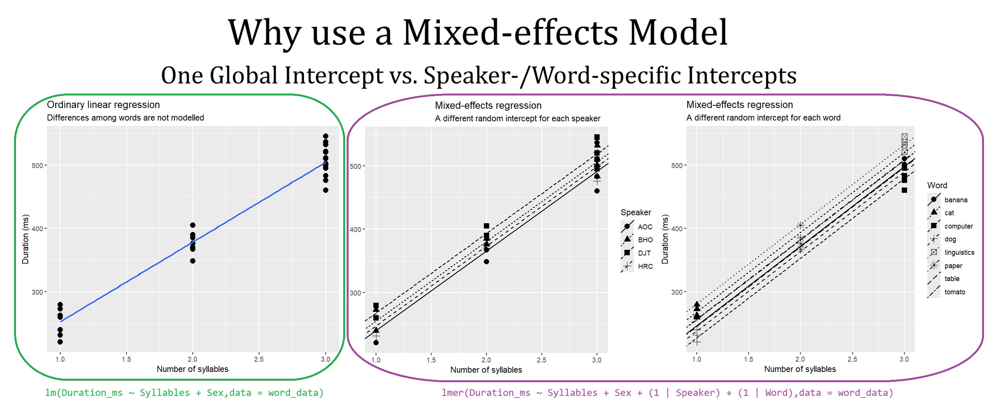
At this point, the important idea is simply:
Ordinary regression assumes that every observation is independent. Mixed-effects regression allows us to account for observations that are grouped within speakers, words, items, or other repeated units.
We will examine how mixed-effects models do this in the next module.
Also, note. We are done with formal math equations,
but this is what a mixed effects model would look like with
2 random effects and 4 fixed effects (a pretty
common model structure):
\[ Y_{ijk} = \beta_0 +\beta_1X_{1ijk} +\beta_2X_{2ijk} +\beta_3X_{3ijk} +\beta_4X_{4ijk} +u_j +v_k +\epsilon_{ijk} \]
where:
\(\beta_0\) = overall
intercept
\(\beta_1 \ldots \beta_4\) =
coefficients for the four fixed effects
\(i\) = the individual
observation/token
\(j\) = the speaker
\(k\) = the word
\(u_j\) = random intercept for grouping
factor 1, e.g. Speaker
\(v_k\) = random intercept for grouping
factor 2, e.g. Word
\(\epsilon_{ijk}\) = residual error
The random effects are assumed to vary around zero:
\[ u_j \sim N(0,\sigma^2_{\text{Speaker}}) \] \[ v_k \sim N(0,\sigma^2_{\text{Word}}) \]
The progression from descriptive statistics to regression can be summarized as:
Describe the data
↓
Identify a relationship of interest
↓
Ask how much uncertainty surrounds the observed pattern
↓
Fit a regression model
↓
Estimate coefficients
↓
Compare estimates with their uncertainty
↓
Interpret the relationship in linguistic termsFor simple data, an ordinary regression may be sufficient.
For repeated linguistic observations, we will usually need to extend this structure using mixed effects.
Dependent variable (DV): The outcome the model attempts to explain.
Predictor / independent variable (IV): A variable used to explain variation in the dependent variable.
Intercept: The predicted value of the dependent variable when the predictor is zero, or when categorical predictors are at their reference level.
Slope / coefficient: The estimated change in the dependent variable associated with a one-unit change in a predictor.
Predicted value: The value estimated by the regression equation.
Residual: The difference between the observed value and the value predicted by the model.
Standard error: A measure of uncertainty around a coefficient estimate.
t-value: The coefficient estimate divided by its standard error.
p-value: The probability of obtaining the observed result, or something more extreme, under the null model.
Reference level: The categorical level against which other levels are compared.
Fixed effect: A predictor whose relationship with the dependent variable is directly estimated.
Random effect / grouping variable: A term that accounts for repeated or non-independent observations arising from speakers, words, items, or similar groups.
Regression is a way of describing how a dependent variable changes in relation to one or more predictors.
A simple regression fits a line:
\[ \hat{Y} = b_0 + b_1X \]
The intercept gives the baseline prediction, the slope gives the estimated effect of the predictor, and residuals measure the difference between observed and predicted values.
The same framework can represent familiar tests such as a two-group t-test, and it can be expanded to include multiple predictors.
The remaining problem is that linguistic datasets often contain repeated measurements from the same speakers and words. In the next module, we will extend the regression structure to account for this non-independence using linear mixed-effects models.